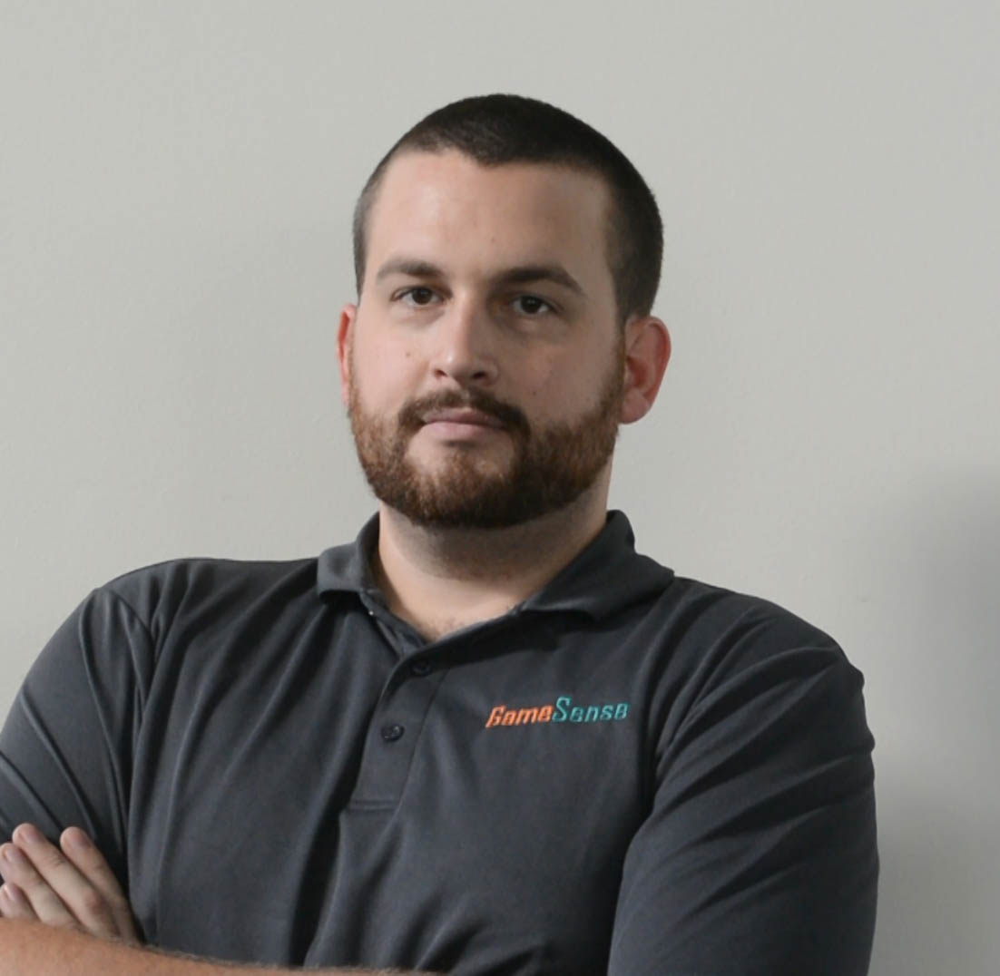
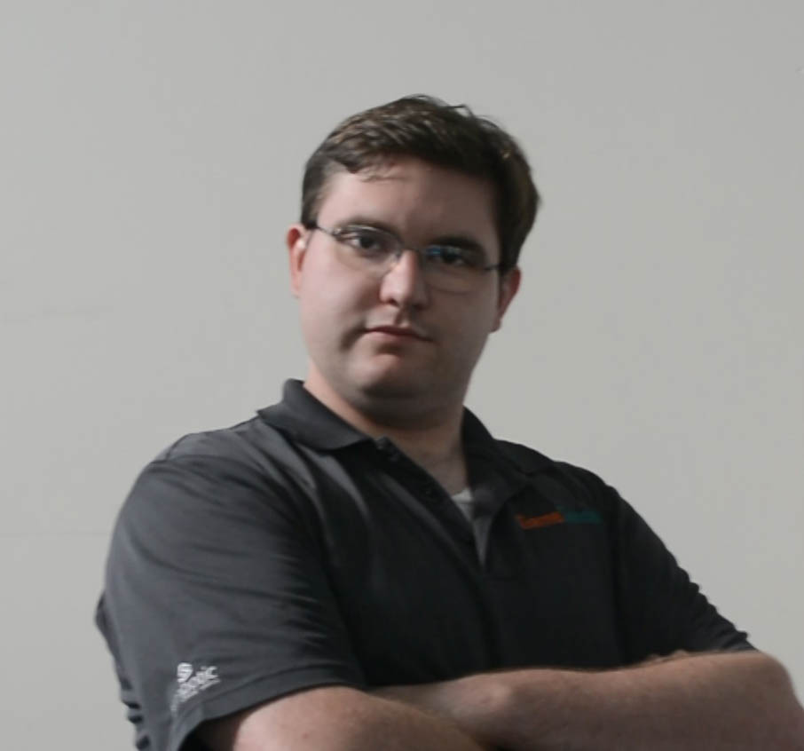
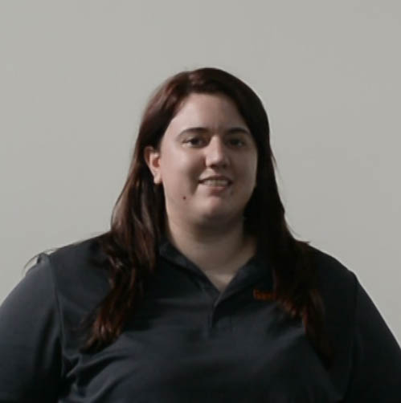
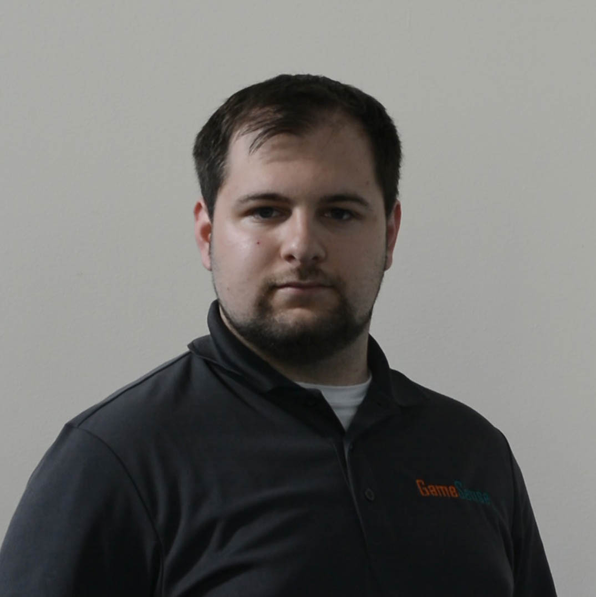
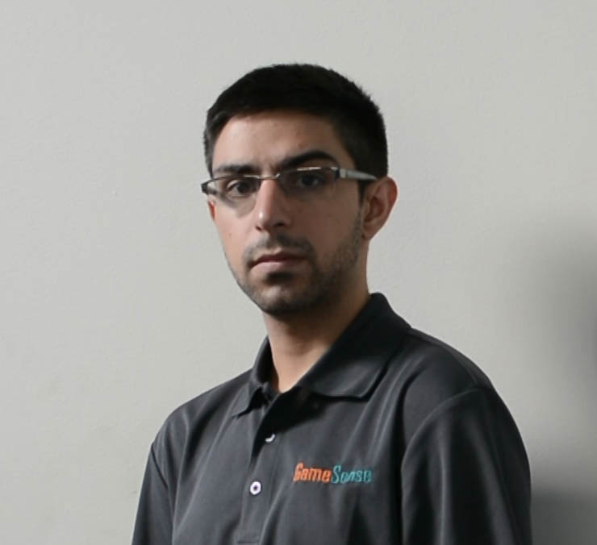
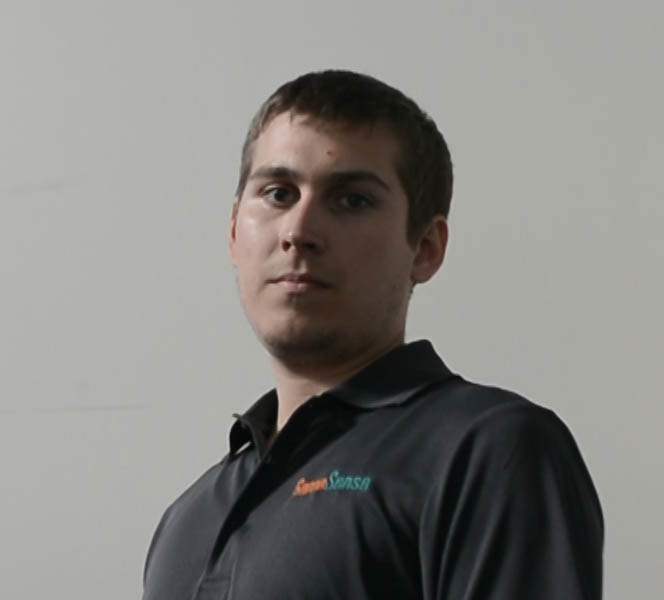

-
What is GameSense?
GameSense is a group of FRC alumni and mentors who are dedicated to creating high quality media productions for the FRC community. The GameSense show
-
What is the GameSense show?
The GameSense show is a FIRST Robotics strategy and gameplay analysis show which aims to spark more strategy discussion in the FIRST community.
-
What is Behind the Lines?
Behind the Lines is a GameSense and FIRST collaboration to bring expert advice and communication to the FIRST Robotics community. The show is structured as a presentation by experts, followed by a live community Q&A session. You can find more information about Behind the Lines on FIRST's website at www.usfirst.org/roboticsprograms/frc/behind-the-lines.
-
When is GameSense?
GameSense Season 1 was on Wednesdays at 6pm Pacific, 9pm Eastern every week of the competition season. Behind the Lines takes place on Wednesday nights at 5pm Pacific, 8pm Eastern approximately twice per month in the fall and winter. For a detailed schedule of Behind the Lines episodes, visit www.usfirst.org/roboticsprograms/frc/behind-the-lines.
-
Where is GameSense?
All GameSense productions, including Behind the Lines, can be found at www.twitch.tv/FRCGameSense or www.youtube.com/FRCGameSense while live, and recordings are also stored on the YouTube channel.
-
How can I contact GameSense?
You can contact GameSense any of the following ways:
Email: GameSense@FRCGameSense.com
Twitter: @FRCGameSense
Facebook: www.Facebook.com/FRCGameSense
-
How can I get updates about GameSense?
Sign up for our mailing list, HERE! Also, check out and subscribe to our calendar, HERE!
-
Who is GameSense?
-
 Ty Tremblay
Co-host, Software Support
Ty joined 319 in 2004 as a freshman in high school. Through FIRST, he learned of Worcester Polytechnic Institute (WPI) and their Robotics Engineering program. While at WPI from 2008 to 2011 he was a mentor on team 190, where he was elected Director of Operations in 2009. After graduating with a MS in Robotics Engineering, Ty is back with his high school team, 319 out of Alton, NH while working as a Manufacturing Engineer at Symbotic. His favorite areas in FIRST are mechanical design, software development, and strategy.
-
 Francis O'Rourke
Co-host, Social Media
Francis participated in FIRST as a high school student from 2003 to 2006 on team 134 from Pembroke, NH and team 40 from Manchester, NH. He began mentoring team 190 from Worcester, MA in 2006, and has been with them since. Francis works as a Technical Writer, specializing in robotics and manufacturing documentation. His FIRST specialties are in scouting, strategy, and manufacturing.
-
 Stephanie Morrison
Co-host, Technical Director, Technical Support
Stephanie was a founding member of FRC Team 1983 Skunk Works Robotics in 2007 as a junior in high school. Upon graduating she received the WPI/FIRST Allaire Scholarship to Worcester Polytechnic Institute (WPI), where she joined FRC Team 190 as a mentor. In 2012 she graduated from WPI with a Bachelor of Science in Mechanical Engineering and concentrations in robotics and mechanical design. After graduating, Stephanie spent a year in Connecticut working for Pratt & Whitney as a Mechanical Design Engineer, before moving back to Seattle. For the 2014 season, she happily rejoined FRC 1983 as a mentor, and also was employed to run two brand new FTC teams at her alma mater, Raisbeck Aviation High School. Steph’s favorite areas in FIRST are mechanical design, controls, and strategy.
-
Evan Morrison
Co-host, Guest Coordinator, A/V Support
Evan joined FRC Team 971 for the 2005 season as a junior, and was elected Team President as a senior in 2006 He has continued to mentor 971 from afar since graduating high school, while mentoring FRC 190 from 2007-2010, attending WPI and earning a degree in Mechanical Engineering. He continued to mentor 190 for the 2011 season before leaving Massachusetts to pursue a Master’s degree from Purdue. After graduating, Evan took a full time job as a Mechanical Engineer at Boeing in Seattle, and began mentoring FRC 1983 in 2014. In addition to his mentoring roles, he has helped run video production at the WPI BattleCry offseason event, and worked closely with FIRSTWA to assemble and run the A/V system for the first year of PNW districts.
-
Navid Shafa
Statistician, Website Developer
Navid participated in FVC/FTC in 2007/2008 and FRC from 2008-2011. As a mentor, he primarily works with Design/Mechanical and shifts to Scouting/Strategy during the competition season. Navid is also a big water-jet geek and often machines a slew of parts for the robot. He currently works with Washington FIRST Robotics, and will be coaching an FLL team this year, on top of mentoring Skunk Works.
-
David McLaughlin
Technical Director
Dave joined first in 2007 as an inaugural member of FRC Team 1983 alongside fellow GameSense member and friend Stephanie Morrison. After graduating from Raisbeck Aviation High School in 2009, he attended Worcester Polytechnic Institute in pursuit of a degree in Robotics Engineering. After one year at WPI, Dave returned to Seattle to reevaluate his goals while continuing his undergraduate education at Highline Community College. He has been mentoring Team 1983 since returning to Washington in 2011 while working toward his Bachelor's degree in Mechanical Engineering. Dave’s focus as a mentor has been conceptual design and strategy development.